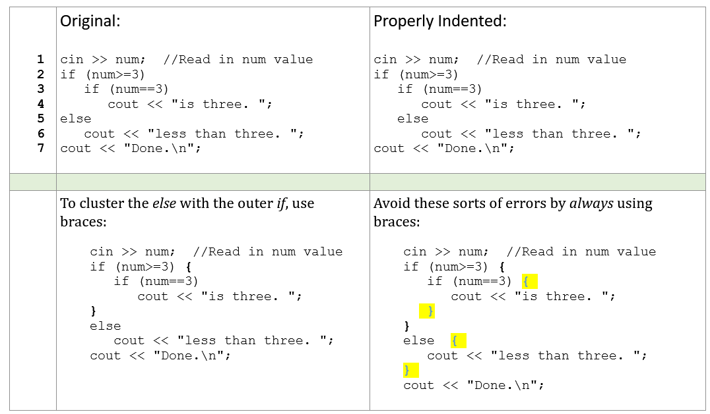

CS141 Program Design II - C++
Selection, Loops ands Functions
Objectives
- Review Program 1 solution; Review program 2 description
- Selection
- Loops
- Functions: Transfer of control, Value vs. Reference parameters
Selection - Coding Options
A.
if (expression1)
action1;
else if (expression2)
action2;
else if (expression3)
action3;
else
defaultAction;
B.
if (expression1)
action1;
else
if (expression2)
action2;
else
if (expression3)
action3;
C.
switch( variable) {
case 1: action1;
break;
case 2: action2;
break;
case 3: action3;
break;
default:
defaultAction;
break;
}
D.
if (expression1)
action1;
if (expression2)
action2;
if (expression3)
action3;
Given user input for a menu of a few items, choose code to handle each menu option.
Answer:
Selection - Coding Options
A.
if (expression1)
action1;
else if (expression2)
action2;
else if (expression3)
action3;
else
defaultAction;
B.
if (expression1)
action1;
else
if (expression2)
action2;
else
if (expression3)
action3;
C.
switch( variable) {
case 1: action1;
break;
case 2: action2;
break;
case 3: action3;
break;
default:
defaultAction;
break;
}
D.
if (expression1)
action1;
if (expression2)
action2;
if (expression3)
action3;
Tax filing program, where multiple conditions might be true.
Answer:
Selections within ranges


Consider the code segment shown at left below, designed to give a letter grade based on a score:
int score;
cout << "Enter score: ";
cin >> score;
// Determine the grade
if (score >= 90)
cout << "A";
if (score >= 80)
cout << "B";
if (score >= 70)
cout << "C";
if (score >= 60)
cout << "D";
else
cout << "F";
With input 72, what is the output?
- A. AB
- B. ABC
- C. C
- D. D
- E. CD
Indentation should reflect meaning - The code on the previous slide should be written as:
// Determine the grade
if (score >= 90)
cout << "A";
else
if (score >= 80)
cout << "B";
else
if (score >= 70)
cout << "C";
else
if (score >= 60)
cout << "D";
else
cout << "F";
What test cases would you use for this code? Why might this matter?
What is the output of the following code for an input of 2?
cin >> num; //Read in num value
if (num >= 3)
if (num == 3)
cout << "is three. ";
else
cout << "less than three. ";
cout << "Done.\n";
| A. | is three. |
| B. | is three. Done. |
| C. | less than three. |
| D. | Done. |
Consider Input of 3 and 4
Braces and Indentation
Coding Activity
Step 1
Observe the diagram above and declare variables for the data you will use in program
Step 2
Think through and apply the correct structures to fulfill the requirements of the program.
Step 3
Code the program in C++ and output the month day along with the correct number of days for each month.
String Operations
Consider the following program segment:
string theChicken = "chicken";
string theEgg = "Egg";
// Which comes first: the chicken or the Egg?
if( theChicken < theEgg) {
cout << "The chicken comes before the Egg." << endl;
}
else {
cout << "The Egg comes before the chicken."<< endl;
}
What is the output, assuming it is in the context of an otherwise correct program?
| A. | The chicken comes before the Egg. |
| B. | The Egg comes before the chicken. |
| C. | Compiler error |
| D. | Program crashes when run |
Why was "B" the anwser?
This is due to the evaluation of the string based upon the ASCII table

In your next course (CS 211) you will use arrays of char in C, rather than the C++ string type, which is what we will use this semester.
String Operations Cont.
For built-in C++ strings it is useful to know that you can use square brackets (like an array) to reference particular elements. For instance:
string text = "All generalizations are false";
cout << text[ 0] << endl; // Access part of the string, output is 'A'
text[ 0] = 'I'; // Change part of the string, changing 'A' to 'I'
Looping
Break and Continue
break
is useful when we are in the middle of a loop and want to break out past the end of the loop.
Break and Continue
continue
is useful when we are in the middle of a loop and we want to go back up to the top of the loop.
Break and Continue
// breakAndContinue.cpp
#include <iostream>
using namespace std;
int main() {
char userInput = ' ';
while( true) {
cout << "Enter 'r' to retry: ";
cin >> userInput;
//userInput = getchar(); // getchar() reads every character, including white space
if( userInput == 'r')
continue;
else
break;
}
cout << "Done." << endl;
return 0;
}
Consider the character 'c' and then pressing space three times and then the return key
After the original prompt to "Enter 'r' to retry:", what is the output if the user input is the character 'r'? :
| A. | There is no output, since the program is waiting for input. |
| B. | Enter 'r' to retry:. |
| C. | Enter 'r' to retry: Done. |
| D. | Enter 'r' to retry: Enter 'r' to retry: Done. |
| E. | Done. |
Functions
Function Info.
Why use functions; transfer of control; return types; parameters; declaration vs. definition; overloading; use in problem decomposition.
Functions contains a series of statements that carry out a task
You can Invoke or call a Function from another program or method
A program can contain an unlimited number of Functions
A Function can be called an unlimited number of times
Functions provide structure for testing and maintainability
Why use Functions
Miller's Magic number 7 +/- 2: Problem decomposition
- If this piques your interest, take a look at the original article: Miller, George A. 1956. The magic number seven, plus or minus two: Some limits on our capacity for processing information. Psychological Review 63: 81-97.
- How do you eat a bicycle?
Transfer of Control - Example
#include <iostream>
using namespace std;
void One()
{
cout << "Testing one\n";
}
int main()
{
cout << "In main\n";
One();
cout << "Back in main.\n";
return 0;
}
Write a program to generate and print a random number (e.g. lottery number). What libraries are needed? How can you find which library is needed if you don't know already?
// rand.cpp Random number generator program.
// 1. What do we need to change so that the random number is
// different each time?
// 2. Where do we look to get information on this?
#include <iostream>
using namespace std;
int main() {
int winningNumber = rand()%100;
cout << "The winning number is: " << winningNumber << endl;
return 0;
}
Below is a second version that includes the libraries for rand() and time(). Note that to use a C library (e.g. stdlib.h) in a C++ program, we add the letter 'c' in front of the library name, and leave off the ".h", as illustrated below:
// rand2.cpp Second random number generator example.
// Running program gives:
// 6 1 6 5 3 2 5 0 5 6 0 5 6 6 0 Done.
// Running it a second time gives:
// 0 4 2 0 1 0 1 1 3 6 5 3 0 1 1 Done.
#include <iostream>
#include <cstdlib> // for rand(). The original C library is: stdlib.h
#include <ctime> // for time( 0). The original C library is: time.h
using namespace std;
int main() {
// Initialize random number generator to give different values each time.
// We will normally not do this in our programs, so results are predictable.
srand( time(0));
// Use mod 7 to give random numbers in the range 0 to 6
for( int i = 0; i < 15; i++) {
cout << rand()%7 << " ";
}
cout << "Done. " << endl;
return 0;
}
A Basic Function
returnType functionName( type1 parameter1, type2 parameter2, ...)
{
// code goes here...
}
Parameters
Passing in values using parameters
E.g. Pass two numbers to be added to a function, which returns the sum: parameters.cpp
// paameters.cpp
// Illustrate passing values into a function, using
// the function return value to return a computed result.
include <iostream>
using namespace std;
int f(int x, int y) {
return x + y;
}
int main() {
int x=3, y=5;
cout << "Sum of numbers is: " << f(x,y) << endl;
cout << endl;
return 0;
}
In-Class Activity
Step 1
Observing the program above, create a function that accepts end-user input and output the correct month along with cooresponding days.
Step 2
Name the function outputMonth() that defines one interger parameter. The function will then output the month and will not return data.
Step 3
Consider global variables for this example
Functions
Call by Value vs. Reference
Consider the following program to swap to numbers
// swap.cpp
// Use parameters to swap two numbers
#include <iostream>
using namespace std;
void swap(int x, int y) {
x = y;
y = x;
cout << "Inside swap, x and y are: " << x << " " << y << endl;
}
int main() {
int x = 3, y = 5;
cout << "Before swap, x and y are: " << x << " " << y << endl;
swap( x,y);
cout << " After swap, x and y are: " << x << " " << y << endl;
cout << endl;
return 0;
}
What are the values for x and y when printed inside function swap( x,y)?
| A. | 3 3 |
| B. | 3 5 |
| C. | 5 3 |
| D. | 5 5 |
Suppose we change the swap function as follows, with the rest of the code remaining the same: void swap(int x, int y)
// swap.cpp
// Use parameters to swap two numbers
#include <iostream>
using namespace std;
void swap(int x, int y) {
int temp = x;
x = y;
y = temp;
cout << "Inside swap, x and y are: " << x << " " << y << endl;
}
int main() {
int x = 3, y = 5;
cout << "Before swap, x and y are: " << x << " " << y << endl;
swap( x,y);
cout << " After swap, x and y are: " << x << " " << y << endl;
cout << endl;
return 0;
}
Again, what are the values for x and y when printed inside function swap( x,y)?
| A. | 3 3 |
| B. | 3 5 |
| C. | 5 3 |
| D. | 5 5 |
Below is the updated version of the program that includes the updated version of the swap(…) function: void swap(int x, int y)
// swap.cpp
// Use parameters to swap two numbers
#include <iostream>
using namespace std;
void swap(int x, int y) {
int temp = x;
x = y;
y = temp;
cout << "Inside swap, x and y are: " << x << " " << y << endl;
}
int main() {
int x = 3, y = 5;
cout << "Before swap, x and y are: " << x << " " << y << endl;
swap( x,y);
cout << " After swap, x and y are: " << x << " " << y << endl;
cout << endl;
return 0;
}
Now what are the values for x and y when printed in main() after the call to function swap( x,y)?
| A. | 3 3 |
| B. | 3 5 |
| C. | 5 3 |
| D. | 5 5 |
Reference Parameters
To get the swap function to swap the numbers and reflect those changes back to the calling code, we must add an ampersand & between the parameter type and the parameter name:
void swap(int &x, int &y) {
int temp = x;
x = y;
y = temp;
}
This causes a parameter's changed value to be reflected back to the calling code.
Consider the following function declaration:
void foo( int x, int &y, int &z)
In the function foo, changes to x are not reflected back, but changes to y and z are. In this example x is a value parameter, but y and z are reference parameters.
Consider the following program segment that uses a move number and a score:
#include <iostream>
using namespace std;
int updateScoreAndMoveNumber(int score, int moveNumber){
score++;
moveNumber++;
return score;
}
int main() {
int score = 0;
int moveNumber = 0;
//How do we modify the function to update both score and move number?
score == updateScoreAndMoveNumber( score, noveNumber);
cout << moveNumber << "Updated score is: " << score << endl;
return 0;
}
What should we change so that function updateScoreAnMoveNumber() also changes moveNumber ?
| A. | It is not possible to update moveNumber, since we can only return one value |
| B. | Add a second return value |
| C. | Make moveNumber a global variable |
| D. | Make moveNumber a reference parameter |
Consider these function declaration choices. Assume each function would have a body of code to implement the function:
A. void f(int x, int y)
B. void f(int &x, int &y)
C. int f(int x, int y)
D. float f(int x, int y)
E. The necessary function declaration is not shown
Assuming we are using a function call to implement each of the situations described below, where a and b are both of type int. Which of the above alternatives would be the best approach to use? ?
| A. | cout << "a divided by b is: " << f(a,b); |
| B. | cout << "Swapping the values stored in a and b gives: "; f(a,b); cout << a << " and " << b; |
| C. | cout << "The average number of seats in the rooms is: " << f(a,b) << endl; |
Functions: Declaration vs. Definition
All functions must have been "seen" by the compiler before they can be used. One way to do this is to place all functions before main().
Function Overloading
Does the program shown in the table below compile and run as-is?
- A) Yes
- B) No
Why or why not?
Function Overloading
Functions can have the same name, but must have different argument signatures. For instance consider a function to sum some numbers. The argument signature is the name of the function plus the types and number of parameters.